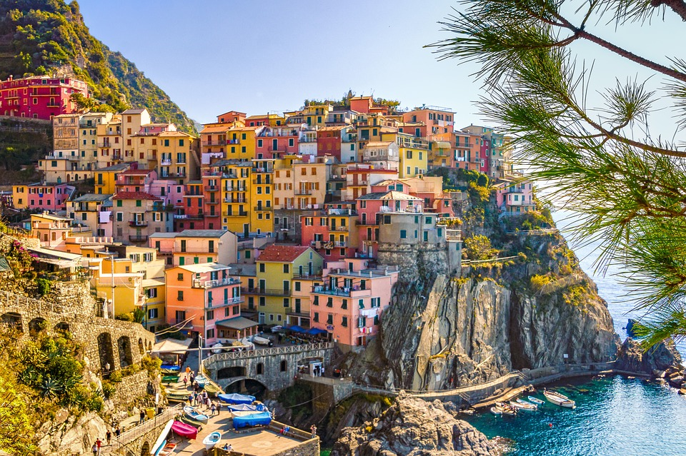
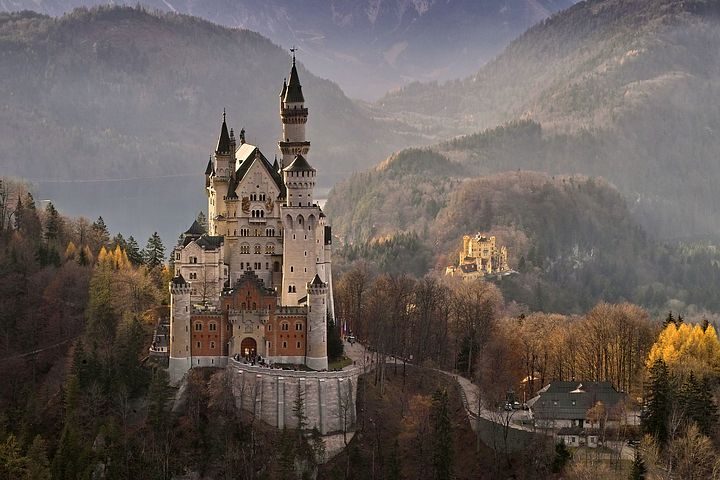

At 21, I quit my corporate job in the Philippines to pursue my dreams of traveling the world and building my own remote business. It all seemed crazy, especially because I was young and broke — but after a few months… I made it all happen!
Today, I am a successful digital nomad (online entrepreneur) and solo female traveler (+blogger and vlogger) who has been to all 7 continents.
MY MISSION? To help show YOU that no matter the odds, it is absolutely possible to create a life of non-stop travel and establish financial independence with remote work. I will help you achieve these through my no-BS experiences and learnings, along with my tried-and-tested working resources, travel tips, hacks, guides, and MORE!
Latest post:
Italy
Italy is one of the most popular vacation destinations in the world, and it's no wonder. However, not every Italian getaway needs to be in the hub of Florence or along the Amalfi Coast. Here, we take a look at some of the most beautiful—and under the radar—places in Italy to book your next vacation to.
Germany
Germany is a beautiful, varied country with an impressive culture and endless travel opportunities, but, unfortunately, you rarely see it on top of travelers’ lists. Why and how is this happening I have no idea, but I do know that its deep forests, fairy-tale castles, and picture-perfect towns are something that you shouldn’t miss. Add to all these some excellent beer, the most beautiful Christmas Markets, and an abundance of activities, and you’ll soon wonder why in the world you haven’t visited Germany earlier.